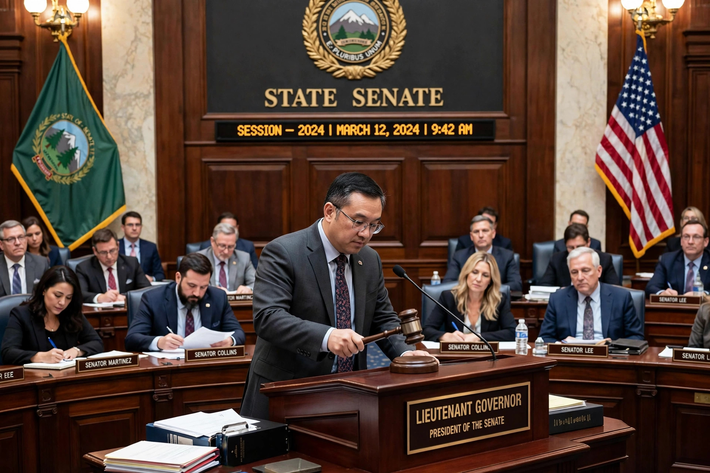

A lieutenant governor is an official who acts as the deputy or substitute for a governor. The office exists in various forms in the United States, Canada, and other Commonwealth and federal systems, where the lieutenant governor is generally the second-highest executive official in a state or province.

A lieutenant governor presiding over a state senate session.
Forty-five U.S. states have a lieutenant governor. The office's principal function is to succeed the governor upon death, resignation, or removal, and to act as governor during absences or disability. In many states the lieutenant governor also presides over the state senate and may cast tie-breaking votes — in Texas and some other states this makes the office exceptionally powerful in the legislative process. Selection methods vary: in some states the governor and lieutenant governor are elected on a joint ticket; in others they are elected separately, which can produce executives of different parties; in a few states the post is filled by another officeholder (such as the senate president or secretary of state) acting in the role.
In Canada, a lieutenant governor is the viceregal representative of the Canadian monarch in each province, appointed by the Governor General on the advice of the Prime Minister of Canada, normally for five-year terms. Provincial lieutenant governors grant royal assent to legislation, summon and dissolve legislatures, and perform ceremonial duties; the office is analogous to the state governors of Australia.
National Lieutenant Governors Association; provincial government publications (Canada).